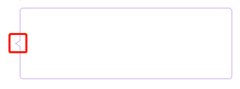

盒子模型
2019.11.11 @wsl
margin折叠 (Collapsing margins)
CSS中，两个或者多个盒（可能但不一定是兄弟）的相邻的margin会被结合成一个margin。Margin按这种方式结合叫折叠（collapse），产生的结合的margin叫做margin折叠。
Adjoining vertical margins collapse（相邻的垂直margin会折叠）, except:
- Margins of the root element's box do not collapse. （根元素不折叠）
- If the top and bottom margins of an element with clearance are adjoining, its margins collapse with the adjoining margins of following siblings but that resulting margin does not collapse with the bottom margin of the parent block.（有间隙不折叠）
Horizontal margins never collapse.（水平margin不折叠）
相邻margin条件
Two margins are adjoining if and only if:（相邻margin条件）
both belong to in-flow block-level boxes that participate in the same block formatting context（流内块级盒，同一BFC）
no line boxes, no clearance, no padding and no border separate them (Note that certain zero-height line boxes (see 9.4.2) are ignored for this purpose.) （无行盒、间隙、padding、border相隔）
both belong to vertically-adjacent box edges（同属垂直相邻盒边）, i.e. form one of the following pairs:
- top margin of a box and top margin of its first in-flow child（盒的top margin和其第一个子级的top margin）
- bottom margin of box and top margin of its next in-flow following sibling（盒的bottom margin和下面相邻兄弟的top margin）
- bottom margin of a last in-flow child and bottom margin of its parent if the parent has 'auto' computed height（盒最后一个子级的bottom margin和其父级的bottom margin）
- top and bottom margins of a box that does not establish a new block formatting context and that has zero computed 'min-height', zero or 'auto' computed 'height', and no in-flow children（特殊盒子自身的top和bottom margin）
A collapsed margin is considered adjoining to another margin if any of its component margins is adjoining to that margin.（相邻margin会发生margin折叠）
Adjoining margins can be generated by elements that are not related as siblings or ancestors.（相邻margin可以由非兄弟或祖先关系生成）
不折叠情况
Note the above rules imply that:
- Margins between a floated box and any other box do not collapse (not even between a float and its in-flow children).（浮动不折叠）
- Margins of elements that establish new block formatting contexts (such as floats and elements with 'overflow' other than 'visible') do not collapse with their in-flow children.（创建BFC与其子级不折叠）
- Margins of absolutely positioned boxes do not collapse (not even with their in-flow children).（绝对定位不折叠）
- Margins of inline-block boxes do not collapse (not even with their in-flow children).（内联块不折叠）
- The bottom margin of an in-flow block-level element always collapses with the top margin of its next in-flow block-level sibling, unless that sibling has clearance.（兄弟有间隙不折叠）
- The top margin of an in-flow block element collapses with its first in-flow block-level child's top margin if the element has no top border, no top padding, and the child has no clearance.
- The bottom margin of an in-flow block box with a 'height' of 'auto' and a 'min-height' of zero collapses with its last in-flow block-level child's bottom margin if the box has no bottom padding and no bottom border and the child's bottom margin does not collapse with a top margin that has clearance.（父子间有padding，border，间隙不折叠）
- A box's own margins collapse if the 'min-height' property is zero, and it has neither top or bottom borders nor top or bottom padding, and it has a 'height' of either 0 or 'auto', and it does not contain a line box, and all of its in-flow children's margins (if any) collapse.（特殊盒子有padding，border不折叠）
margin折叠计算
当两个或者更多的margin折叠时，产生的margin宽度为折叠margin宽度中的最大值。至于负margin，就从正相邻margin的最大值中减去负相邻margin的绝对值的最大值。如果没有正margin，就用0减去相邻margin的绝对值的最大值。
如果盒的top和bottom margin相邻，那么可能会被彻底折叠（collapse through）margin。此时，元素的位置取决于与其它margin被合并了的元素的关系。
- 如果该元素的margin与其父级的top margin合并了，盒的top border边被定义为与其父级的相同
- 否则，要么该元素的父级没有参与margin合并，要么只涉及其父级的bottom margin。如果该元素的bottom border不为0的话，其top border边的位置将正常显示（the same as it would have been）
注意，已被彻底合并了的元素的位置不影响其它margin被合并的元素的位置，只有在布局这些元素的后代时，才需要top border边的位置。
控制盒生成 (Controlling box generation)
下面的各节描述了CSS 2.1中可能生成的盒的类型。盒的类型对其在可视化格式模型中的行为有一定影响。下面描述的'display'属性指定了盒的类型。
块级元素与块盒
块级元素
Block-level elements是源文档中那些被格式化成视觉上的块的元素（例如，paragraphs）。'display'属性的下列值能让一个元素变成块级的：**'block'，'list-item'和'table'**。
块级盒
块级盒是参与块格式化上下文（BFC, block formatting context）的盒。
每个块级元素生成一个主块级盒（principal block-level box），用来包含后代盒和生成的内容，并且任何定位模式都与该盒有关。有些块级元素可能生成除主盒外的额外的盒：'list-item'元素。这些额外的盒根据主盒来放置。
块容器盒
除了 table boxes与replaced elements外，a block-level box is also a block container box.
A block container box either contains only block-level boxes or establishes an inline formatting context and thus contains only inline-level boxes.
不是所有的块容器盒都是块级盒：不可替换的内联块和不可替换的表格单元是块级容器，但不是块级盒。作为块级容器的块级盒也叫块盒。
三个术语“块级盒（block-level box）”，“块容器盒（block container box）”与“块盒（block box）”在没有歧义的时候就简称为“块（block）”。
匿名块盒
内联元素与内联盒
匿名内联盒
定位模式
In CSS 2.1, a box may be laid out according to three positioning schemes:
Normal flow. In CSS 2.1, normal flow includes block formatting of block-level boxes, inline formatting of inline-level boxes, and relative positioning of block-level and inline-level boxes. （常规流，包括块格式化、内联格式化、相对定位）
Floats. In the float model, a box is first laid out according to the normal flow, then taken out of the flow and shifted to the left or right as far as possible. Content may flow along the side of a float. （浮动，会影响常规流）
Absolute positioning. In the absolute positioning model, a box is removed from the normal flow entirely (it has no impact on later siblings) and assigned a position with respect to a containing block. （绝对定位，会脱离常规流）
An element is called out of flow if it is floated, absolutely positioned, or is the root element. An element is called in-flow if it is not out-of-flow. The flow of an element A is the set consisting of A and all in-flow elements whose nearest out-of-flow ancestor is A.（如果一个元素是浮动的，绝对定位的或者是根元素，它就叫流外（元素）。不是流外元素的叫流内元素。元素A的流 由A和所有最近的流外祖先为A的流内元素组成的）
定位模式
常规流中的盒属于一个格式化上下文，可能是块或是内联，但不能都是（既是块又是内联）。块级盒参与块格式化上下文。内联级盒参与内联格式化上下文。
块格式化上下文 (BFC, Block formatting contexts)
BFC的触发：
浮动，绝对定位元素，非块盒的块容器（例如，inline-blocks，table-cells和table-captions）和'overflow'不为'visible'的块盒（当该值已被传播到视口时除外（except when that value has been propagated to the viewport））会为它们的内容建立一个新的块格式化上下文。
注：fieldset 元素在HTML5标准里出现。有些浏览器bugs（Webkit，Mozilla）提到过这个触发行为，但是没有任何官方声明。实际上，即使fieldset在大多数的浏览器上都能创建新的块级格式化上下文，开发者也不应该把这当做是理所当然的。CSS 2.1没有定义哪种属性适用于表单控件，也没有定义如何使用CSS来给它们添加样式。用户代理可能会给这些属性应用CSS属性，建议开发者们把这种支持当做实验性质的，更高版本的CSS可能会进一步规范这个。
在一个块格式化上下文中，盒在竖直方向一个接一个地放置，从包含块的顶部开始。两个兄弟盒之间的竖直距离由'margin'属性决定。同一个块格式化上下文中的相邻块级盒之间的竖直margin会折叠。
在一个块格式化上下文中，每个盒的left外边（left outer edge）挨着包含块的left边（对于从右向左的格式化，right边挨着）。即使存在浮动（尽管一个盒的行盒可能会因为浮动收缩），这也成立。除非该盒建立了一个新的块格式化上下文（这种情况下，该盒自身可能会因为浮动变窄）。
扩展应用
1. 三角形
利用border，画三角形。
.triangle-top {
width: 0;
height: 0;
border-top: 20px solid #abc;
border-left: 30px solid transparent;
border-right: 50px solid transparent;
}
2. 对话框

针对图中的尖角部分，可以使用两个三角形叠加的方式画出。
如果要加阴影，可以使用filter。
.chat-msg {
filter: drop-shadow(0 0 2px #999);
background-color: #fff;
}
实例
参见 /demos/02-css/box/